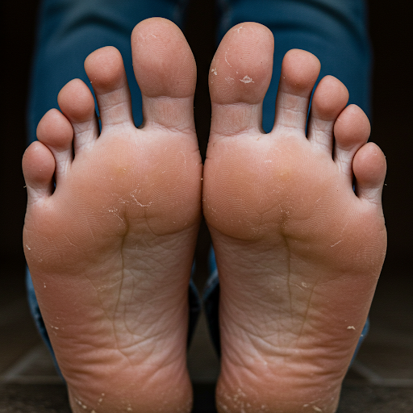
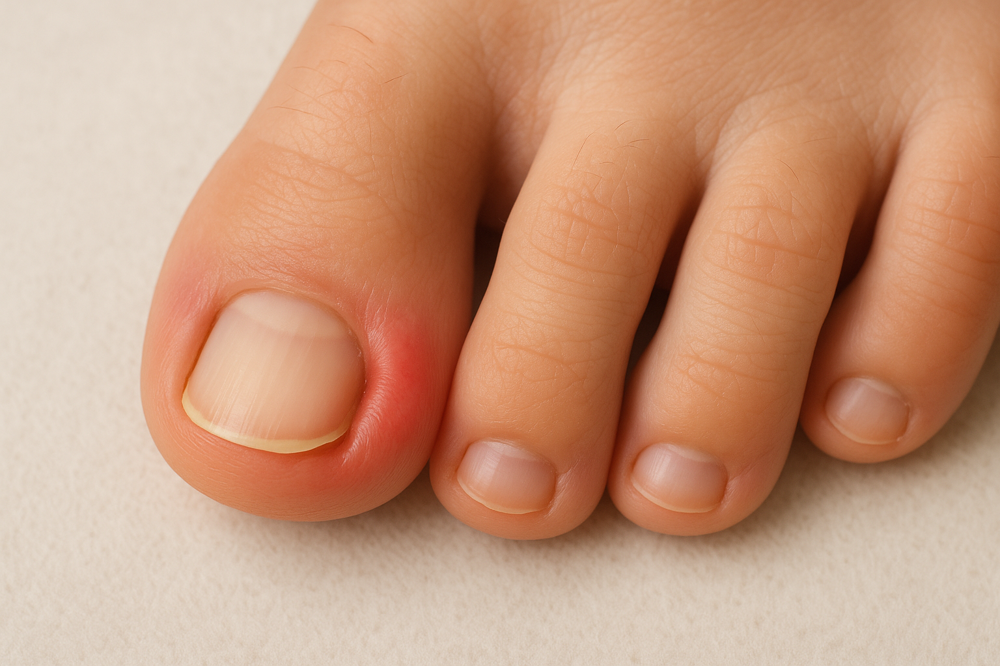
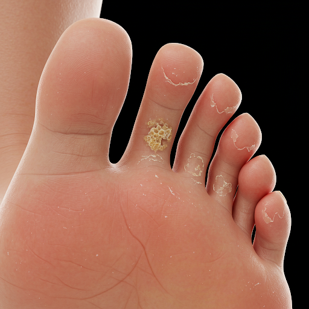
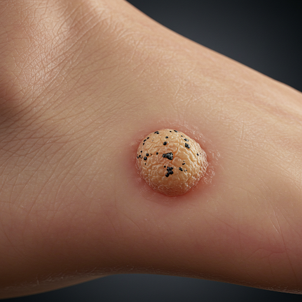
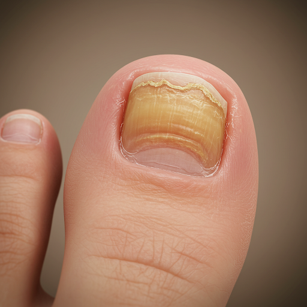

¿Qué puede hacer por usted un podólogo?
Especialistas en salud y bienestar del pie
El podólogo se especializa exclusivamente en prevenir, diagnosticar y tratar por medios conservadores y/o quirúrgicos todas las enfermedades que afectan al pie. Es capaz de atender la totalidad del miembro inferior, desde las durezas y las uñas hasta las afecciones dermatológicas y los problemas biomecánicos.
En Clínica Pies trabajamos con un enfoque integral para ofrecer soluciones eficaces, personalizadas y orientadas a la prevención para mejorar su movilidad y calidad de vida.
Servicios
Tratamientos para cada necesidad

DUREZAS
(HIPERQUERATOSIS)
Es el engrosamiento excesivo de la capa más externa de la piel, causado por un aumento en la producción de queratina. En podología, suele manifestarse como áreas de piel endurecida, como callosidades o durezas, especialmente en zonas sometidas a presión o fricción repetida.

UÑAS ENCARNADAS
(ONICOCRIPTOSIS)
Es una afección conocida como uña encarnada. Ocurre cuando el borde lateral o anterior de la uña se clava en la piel circundante, causando inflamación, dolor, enrojecimiento e incluso infección si no se trata a tiempo.

HONGOS EN EL PIE
(PIE DE ATLETA)
Es una infección fúngica que afecta la piel de los pies, especialmente entre los dedos. Se manifiesta con descamación, enrojecimiento, picazón, grietas o ampollas, pudiendo extenderse a las plantas y los bordes de los pies.

VERRUGA PLANTAR
(PAPILOMA)
Es una lesión cutánea causada por el virus del papiloma humano (VPH). Aparece como una protuberancia en la planta del pie, a menudo con puntos negros y rodeada de piel endurecida, causando dolor al presionarla.

INFECCIONES POR HONGOS EN UÑAS
Son afecciones que provocan el engrosamiento, decoloración, fragilidad y deformidad de las uñas, generalmente en los pies, por la invasión de hongos o levaduras.
Por qué elegirnos
Atención cercana, técnica y profesional
Diagnóstico preciso
Valoramos cada problema del pie para diseñar un plan de tratamiento eficaz y seguro.
Tratamiento integral
Abordamos la causa y la sintomatología para prevenir recaídas y mejorar la movilidad.
Prevención y seguimiento
Te acompañamos con medidas preventivas para mantener tus pies sanos en el tiempo.
Contacto
Contacta con nosotros
Si notas dolor, durezas, molestias de uñas, hongos o cualquier enfermedad del pie, te ayudamos a recuperar la salud del mismo con una atención individualizada.
- Calle Real de San Sebastián, 23
Brunete, Madrid (28690) - 91 816 43 50
- clinicapies.brunete@gmail.com
Horario
- Lunes09:30 - 14:00
16:00 - 20:00 - Martes09:30 - 14:00
16:00 - 20:00 - Miércoles09:30 - 14:00
16:00 - 20:00 - Jueves09:30 - 14:00
16:00 - 20:00 - Viernes09:30 - 14:00
16:00 - 20:00